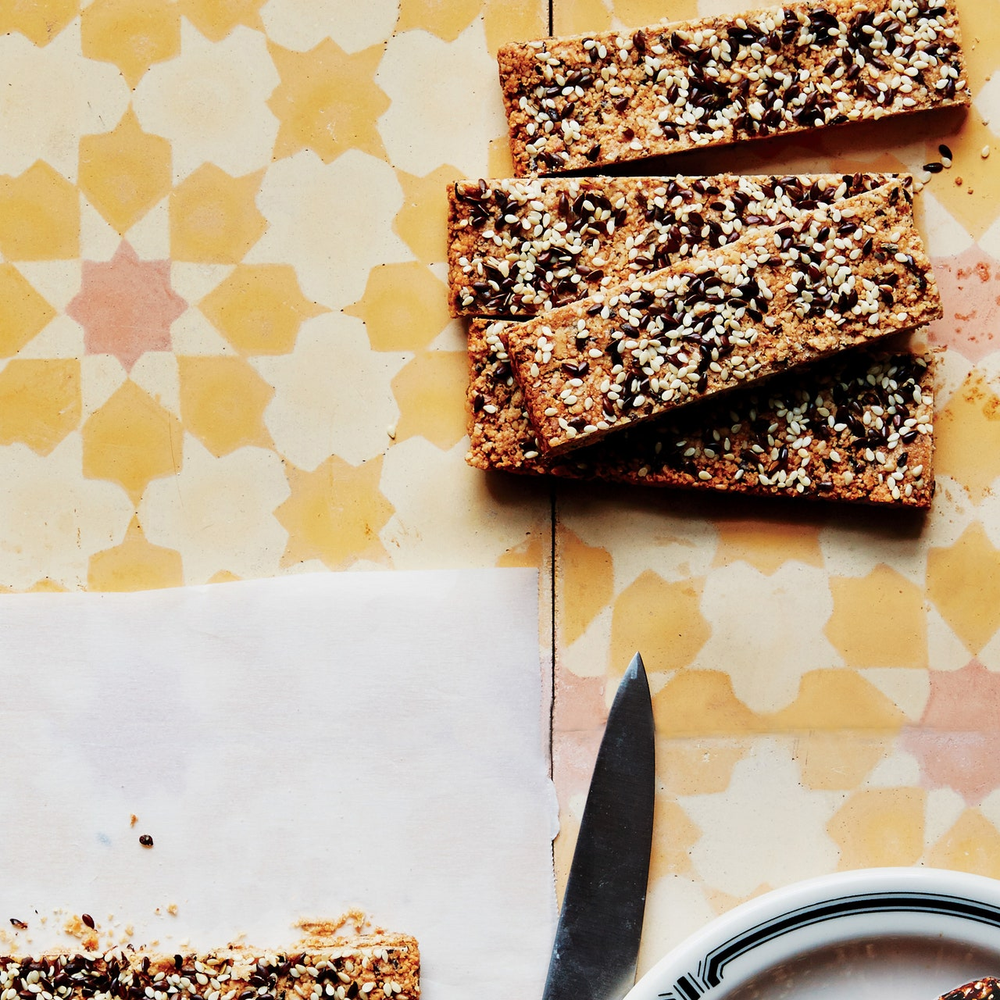

Crunchy Cashew-Sesame Bars

Description
Perfect healthy snacks for any occation, or to pack-to-go for the office or the gym.
Ingredients:
- Nonstick vegetable oil spray
- 1 1/2 cups cashews
- 8 tablespoons raw sesame seeds, divided
- 6 tablespoons flaxseed, divided
- 1/4 cup wheat bran
- 3/4 teaspoon kosher salt
- 1/4 teaspoon ground cardamom
- 1/2 cup pure maple syrup
- 1 tablespoon coconut oil
Steps:
- Coat 8x8" baking pan with nonstick vegetable oil spray; line with parchment, leaving overhang on all sides.
- Toast 1 1/2 cups cashews, 6 tablespoons raw sesame seeds, and 5 tablespoons flaxseed in separate areas on a
rimmed
baking sheet in a 350° oven, stirring occasionally (but not mixing), until golden brown, 10–12 minutes. Let
cool.
- Set aside 2 tablespoons sesame seeds and 1 tablespoon flaxseed.
- Process cashews and remaining seeds with 1/4 cup wheat bran, 3/4 teaspoon kosher salt, and 1/4 teaspoon ground
cardamom
in a food processor until mostly finely chopped.
- Place in a medium bowl. Bring 1/2 cup pure maple syrup and 1 tablespoon coconut oil to a boil in a small
saucepan; cook,
stirring, 1 minute.
- Pour over cashew mixture and stir to coat.
- Press mixture firmly into prepared pan with wet hands (it will be sticky).
- Top with reserved seeds; press to adhere.
- Bake until golden brown, 25–30 minutes.
- Let cool, then cut into bars.